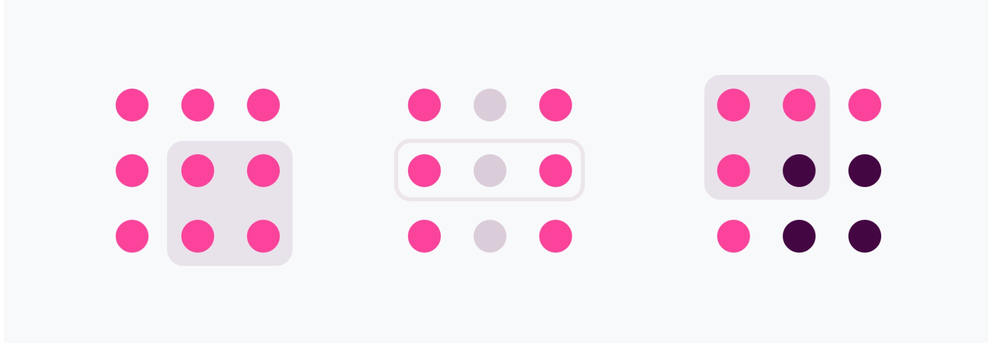

Gestalt
Psychology influences humans visual perception and plays powerful role in interpretation of visual stimuli. We always try to discover the meaning and the sense of the particular object or phenomenon and we´re looking for the simplest possible way to understand it (“law of simplicity”). Do you recall shapes in cloudes or shape of a dog , a bird when your hands cast a shadow? We like to find simplicity and order in complex shapes because it demands the least cognitive effort. Designers can use these principles to prevent users from becoming overwhelmed.
According to Gestalt theory, an organized whole is not the same as the sum of its parts.“The whole is something else than the sum of its parts.” — Kurt Koffka. The human mind sees the whole picture before it recognizes specific elements.
Max Wertheimer, Wolfgang Köhler, and Kurt Koffka are the pioneers of Gestalt psychology. Gestalt is a German word. It means “shape” or “form.
Most important elements of Gestalt theory. Move users perception as intended it to be.
- Grouping rule: Proximity & Common Region
- Similarity
- Closure
- Figure-Ground / Negativ Space
- Common Fate
- Continuity
Law of proximity
Grouping princip: objects are grouped together according to their distance from one another. We perceive elements that are closer to each other to belong in the same group. In the same way, if elements are distant, human catalogs them into a different, separate groups. Groupings helps understand where standard areas such as navigation, content or ads are designers create content more comfortable to perceive by users. The pages are more scannable, helps direct users attention.
Law of common region
Law of similarity
Objects perceived by the user to be similar we group together.
Closure
We are able to see or deduct the whole object even if there are missing element or it is incomplete. Humans visual perception unconsciously completes incomplete objects.
Closure is at the heart of Gestalt psychology: our minds create something coherent from parts that are objectively incoherent

Figure ground / negative space
Every time you see the modal page or popup you are a witness of Figure-Ground Principle usage in action. There are several techniques to distinguish plans of focus on mobile: you can use parallax background, semi-transparent overlay, shadows or blur the elements in the background. There are design systems that prefer each technique to be used in them: Material Design uses overlays and drops shadows, but iOS Human Interface guidelines recommend to use blur.In this example the figure is a vase and the ground contains two faces.